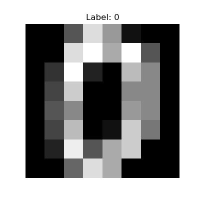

load_digits study
The load_digits dataset from scikit-learn contains a collection of images representing handwritten digits. It is often used as a classic dataset for testing and demonstrating various machine learning algorithms, particularly those in the field of image classification.
Here are the details of the load_digits dataset:
1. Data: The dataset contains a total of 1,797 samples (images) of handwritten digits from 0 to 9. Each sample is an 8x8 grayscale image, resulting in a total of 64 features (pixels) per image. Each pixel value represents the grayscale intensity of the corresponding pixel, ranging from 0 (black) to 16 (white). The data is stored as a 2D array where each row corresponds to an individual sample, and each column represents a specific pixel in the image.
2. Target: For each image (sample) in the dataset, there is a corresponding target label indicating the actual digit it represents. The target values are integers ranging from 0 to 9, representing the digits 0 to 9, respectively.
3. Classes: The load_digits dataset has ten distinct classes, each representing one of the ten digits (0 to 9). The classes are balanced, meaning that the dataset contains an equal number of samples for each digit.
4. Application: The load_digits dataset is often used for various purposes, including:
- Image Classification: The main use case is to build and test machine learning models that can accurately classify the handwritten digits in the images into their respective classes (0 to 9).
- Dimensionality Reduction: Since the dataset has 64 features (pixels), it is also used to demonstrate dimensionality reduction techniques like PCA (Principal Component Analysis) to visualize and reduce the data to a lower-dimensional space.
- Clustering: The dataset can also be used for clustering algorithms to group similar digits together without using the class labels.
5. Sample Code: Here's an example of how to load and explore the load_digits dataset using scikit-learn:
from sklearn.datasets import load_digits
import matplotlib.pyplot as plt
# Load the digits dataset
digits = load_digits()
# Data and target
data = digits.data
target = digits.target
# Number of samples and features
num_samples, num_features = data.shape
# Classes
classes = digits.target_names
# Example: Display the first image and its label
plt.figure(figsize=(4, 4))
plt.imshow(data[0].reshape(8, 8), cmap='gray')
plt.title(f"Label: {target[0]}")
plt.axis('off')
plt.show()

The above code loads the load_digits dataset, accesses the data, target labels, and other information, and displays the first image along with its corresponding label.
In summary, the load_digits dataset is a collection of grayscale images of handwritten digits with corresponding labels, making it a valuable resource for experimenting with image classification and other machine learning tasks.
I would recommend using a scatter plot with dimensionality reduction techniques such as Principal Component Analysis (PCA) or t-SNE (t-Distributed Stochastic Neighbor Embedding).
Here's why:
1. Scatter Plot: A scatter plot is a versatile visualization that can effectively display relationships and patterns in multidimensional data. Each data point in the plot represents an image of a hand-written digit, and the plot's axes can be used to represent different features or dimensions of the dataset.
2. Dimensionality Reduction: The load_digits dataset has 64 dimensions (8x8 pixels per image), making it difficult to visualize directly. Dimensionality reduction techniques like PCA or t-SNE can compress the high-dimensional data into a lower-dimensional space while preserving important patterns and relationships. This allows us to visualize the data in a more manageable and meaningful way.
- PCA: Principal Component Analysis is a linear dimensionality reduction technique that identifies the most important features or principal components in the data. It projects the data onto a lower-dimensional space, where each principal component captures a significant amount of the data's variance.
- t-SNE: t-Distributed Stochastic Neighbor Embedding is a nonlinear dimensionality reduction technique that is particularly useful for visualizing complex, nonlinear patterns in the data. t-SNE focuses on preserving the local relationships between data points, making it effective for clustering and discovering hidden structures.
By applying either PCA or t-SNE to the load_digits dataset and then creating a scatter plot using the reduced dimensions, we can gain insights into the distribution and clustering of the hand-written digits. This visualization approach allows us to explore the dataset and observe patterns or groupings that may exist among the different digits.